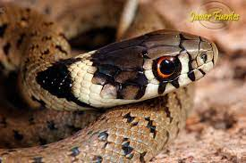

Es una serpiente de agua dulce que vive en las orillas de lagos, lagunas, pantanos y ríos, se puede encontrar en prácticamente toda Europa, desde el sur de Escandinavia hasta el norte de África. Puede llegar a medir hasta 2 metros, siendo las hembras más grandes que los machos. Al no ser venenosa, tiene métodos de defensa alternativos, por ejemplo finge estar muerta permaneciendo inmóvil con la boca abierta, o secreta olores desagradables para espantar a la posible amenaza.
